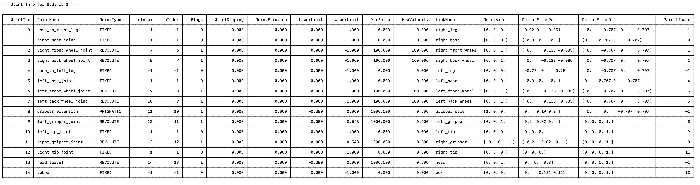
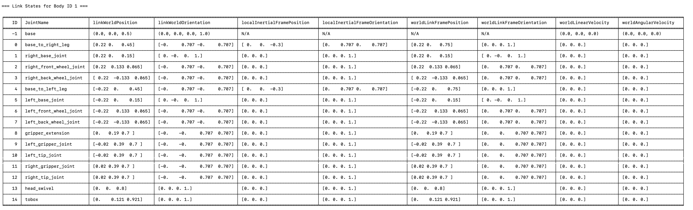
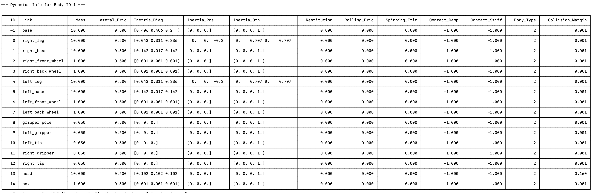

PyBullet Basics: R2D2 Robot Movement and Object Picking
November 23, 2025
This is my first foray into the world of robotics programming in physics simulations.
There's lots to learn -- for example, URDF files and robot specifications, as well as
specifics
of interacting with and manipulating robots in PyBullet.
The ultimate result
is a basic python program that runs a PyBullet simulation where the user can
use keyboard commands to move the robot in all directions on the plane
and manipulate the gripper pole
and claw to pick and place objects.
The biggest challenge is adapting to realistic physics simulation.
For example, previously, in graphics or simple game development, to move an object
one can simply 'teleport' it to the desired location and continuously change its position
to simulate movement and even acceleration. But in a physics simulation, 'teleporting'
the body bypasses all the collision and physics simulation logic.
At first, I tried this 'teleportation' approach but quickly realized the robot was
phasing through objects. So forces and velocities need to be properly applied to
the appropriate components.
It took some time to understand how these 'components' are specified.
In PyBullet (and URDF in general), a robot comprises 'joints' and 'links'.
The joints define the tree strucuture of the robot's components.
The links are
the actual visible and physics elements of the robot
and are connected by joints. So joints are edges and links are nodes.
Each joint is specified by an x-y-z coordinate (and I believe optionally an orientation).
This is the location of the joint in terms of its parent's 'frame'.
I understand the word 'frame' to be the robotics term for
'reference frame' or 'reference coordinate system'. The joint does not really 'exist'
and cannot be seen, but it is the connector of the parent 'link' and child 'link'.
The joint's location (and orientation) defines the 'frame' or coordinate system for its
children (the single immediate child link and all joints stemming from it) --
it defines a new 'origin'.
The links specify an inertial frame, visual frame, and collision frame, all based off the
the frame defined by the joint to its parent. The inertial frame roughly specifies the center of mass,
the visual frame what you see, and the collision frame the collision geometry the physics engine
detects.
There is a base link that serves as the root of the tree. Its origin is the world origin.
Now, in PyBullet specifically, the joints and links are indexed. Each joint and its immediate child link
have the same index. The base is indexed by -1. In the program, I print information regarding each joint
as well as
each link. This is useful for determining the positions of components, which links I can manipulate, the
extent of their range of
motion,
and their type of movement (via the 'joint type').
Joint Info (click to open full-size image in new tab):

Link State Info (click to open full-size image in new tab):

In addition, I also obtain the 'dynamics' information for each link. This tells me among other things,
the mass and friction of the link.
Dynamics Info (click to open full-size image in new tab):

Putting it all together, I created a video of the program demonstrating robot movement and object pick
and place. Due to the default frame rate of the physics simulator, the movement is a bit slow --
something akin
to 2001 Space Odyssey (but maybe even slower).
Video Demonstration (Youtube):
I think in the future, if I want to get serious about graphics and robotics projects, I'm gonna need
to upgrade my computer hardware. I think I would like to build my own computer!